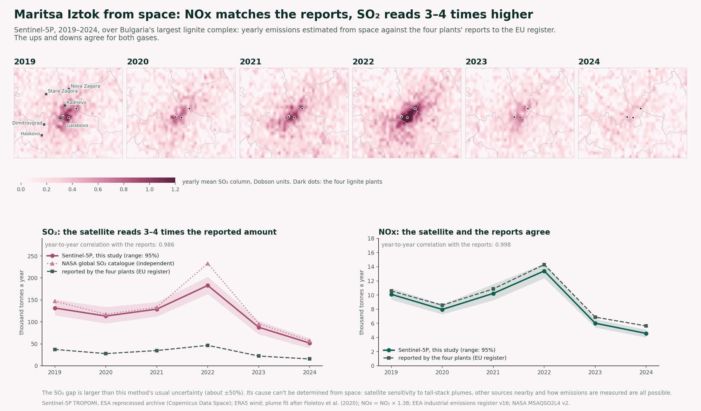
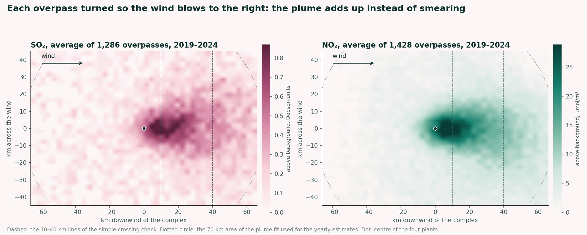

The Maritsa Iztok lignite complex near Galabovo has four power plants within about 20 km, and it is often described as Europe's largest single source of sulphur dioxide. The plants report their yearly emissions to the EU register. The Sentinel-5P satellite measures SO₂ and NO₂ over the complex almost every day. So I asked: do the two tell the same story?
The study looks at the complex as a whole, from 2019 to 2024. This page explains how, what I found, and what satellites can and can't say about it.

Open data in
Each daily orbit file is about 1 GB. Only the part over the complex is read, for every day from May 2018 to June 2025.
OData catalogue · S3 · h5py · pandasESA's reprocessed archive, one consistent software version. On the same days, the older version gives the same result (ratio 1.01 for SO₂, 0.95 for NO₂).
Each overpass is turned so the wind blows the same way, using the ERA5 wind at the time of the overpass.
NumPy · pandasOnly days with usable wind and clear sky. Days with SO₂ drifting in from far away, such as volcanic plumes, are left out.
The standard plume fit (Fioletov and colleagues, used for NASA's catalogue): the four plants, the wind, and how fast each gas disappears, fitted on all overpasses of a year.
SciPy · NumPyRanges from resampling the days. A simpler crossing-line method gives the same ups and downs under every setting tried (correlation 0.97 to 0.99).
Yearly totals of the four plants from the EU register. NO₂ turned into NOx with the published factor 1.38.
pandasAn independent benchmark: NASA's SO₂ catalogue estimate for the same complex, within about 10% of ours in five of six years.
Results out
| Thousand tonnes a year | 2019 | 2020 | 2021 | 2022 | 2023 | 2024 |
|---|---|---|---|---|---|---|
| SO₂, this study | 132 | 113 | 129 | 183 | 88 | 52 |
| SO₂, NASA catalogue | 147 | 117 | 133 | 233 | 96 | 57 |
| SO₂, reported | 37 | 28 | 35 | 47 | 22 | 16 |
| NOx, this study | 10.1 | 8.0 | 10.2 | 13.4 | 6.0 | 4.6 |
| NOx, reported | 10.6 | 8.6 | 10.9 | 14.3 | 6.9 | 5.6 |
From space and in the reports, both gases dip in 2020, peak in 2022 during the energy crisis, and fall steeply in 2023 and 2024. Year by year, the correlation with the reports is 0.986 for SO₂ and 0.998 for NOx.
The NOx estimated from space is 82% to 95% of what the plants report, every year. That is in line with published checks elsewhere: the reference NOx catalogue reads on average 17% below Germany's register.
For SO₂ the picture is different. Two independent satellite estimates, this study and NASA's global catalogue, agree closely with each other, and both are 3 to 4 times the amount the plants report, every year. The gap is larger than the usual uncertainty of the method, which is about 50%.
Satellites can't tell where that gap comes from. The satellite's sensitivity to plumes from very tall stacks, other sources in the complex, and how emissions are measured and reported at the plants are all possible explanations. This study is not evidence of any of them. It shows a difference worth understanding.

This compares the complex as a whole with the four plants' combined reports. The satellite pixels, about 5 by 3.5 km, can't separate plants that stand a few kilometres apart, so no plant is singled out here.
| Satellite | Copernicus Sentinel-5P TROPOMI SO₂ and NO₂, ESA reprocessed archive, via the Copernicus Data Space Ecosystem |
| Wind | ERA5 (Copernicus Climate Change Service) via Open-Meteo |
| Reported emissions | EEA Industrial Reporting under the Industrial Emissions Directive and E-PRTR, version 16 |
| Benchmark | NASA MSAQSO2L4 version 2, global catalogue of large SO₂ sources, 2005–2025 |
| Method | Plume fit after Fioletov et al. (2020); NO₂ to NOx factor from Beirle et al. (2023) |
| Boundaries | geoBoundaries, ODbL |
The code runs end to end from these sources. If you'd like emissions from a site or a region checked from space, get in touch.